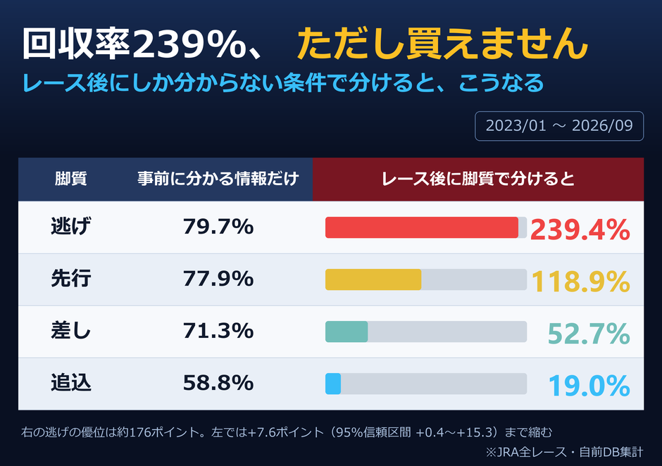

「逃げた馬の単勝を買えば回収率239%」。本当の数字ですが、この馬券は買えません。

4コーナーで先頭だった馬を買えば儲かる、というのは確かに成り立ちます。ただし「4コーナーで先頭かどうか」が分かるのはレースが始まったあとです。発走前の自分には、どの馬がそうなるか分かりません。
そこで、事前に分かる情報だけで同じことをやり直しました。その馬の前走までの平均的な位置取りで脚質を決め、今回を買う。3走以上の実績がある馬に限った結果が左の列です。239%は79.7%になりました。同じ母集団の全体は73.6%です。逃げ型とそれ以外の差は+7.6ポイント（95%信頼区間 +0.4〜+15.3）で、わずかに上回ってはいます。ただし後知恵で分けたときの約176ポイント差とは桁が違います。しかもこの残った差では、払戻率の壁は越えられません。
過去のデータで見つかる「儲かる条件」の多くは、この形をしています。結果を知ってから分け方を決めているので、当然よく見える。見分け方は単純で、その条件は発走前に分かるかと問うだけです。
同じ落とし穴は他にもあります。「最後の直線で外に出せた馬」「道中で折り合えた馬」「馬場の良いところを通れた馬」。どれも走ってみないと分からないことなので、その条件で分ければ回収率は必ず良く出ます。検証している本人にも、後知恵を使っている自覚が無いことがあるので厄介です。
前に行く馬が有利なこと自体は本当です。ただし有利さは広く知られていて、逃げそうな馬のオッズにはすでに織り込まれています。残った差がわずかなのは、有利でないからではなく有利さの分だけ値段が上がっているからです。しかも前走で逃げた馬が今回も逃げられるとは限りません。同じレースに逃げたい馬が3頭いれば、実際に逃げられるのは1頭だけです。
使いどころがあるとすれば、回収率ではなく展開の予想のほうです。出走表を見て前に行きたい馬が何頭いるかを数える作業は、「逃げ馬を買う」より意味があります。この表が言えるのは、脚質というラベルを貼って買うだけではpayoff は動かない、というところまでです。